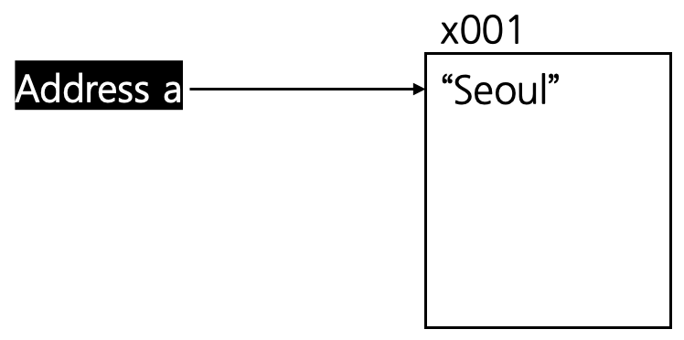
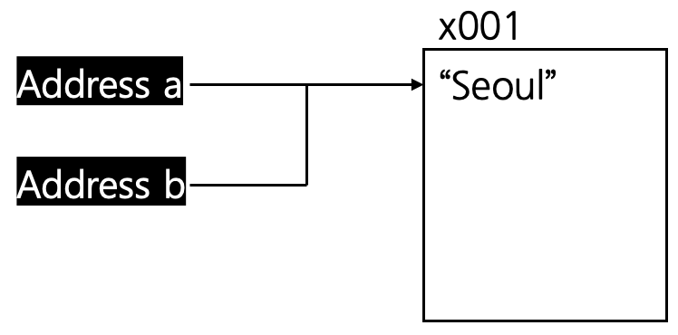
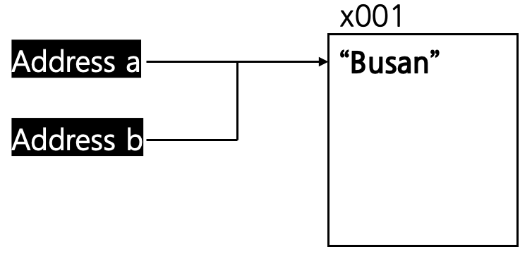
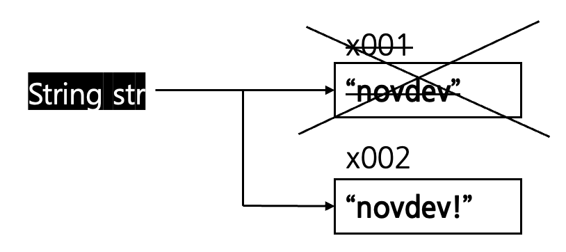

#불변객체
-불변 객체를 사용하는 이유
-불변 객체의 값을 변경하고 싶다면?
-자바의 대표적인 불변 객체로는 String이 존재한다.
* 해당 포스팅은 개인적인 공부 내용을 기록하는 용도로 작성된 글 이기에 잘못된 내용을 포함하고 있을 수 있습니다.
#불변객체
객체지향 프로그래밍 에서의 불변 객체 [Immutable Object] 란 한 번 인스턴스가 할당 되었다면 이후 객체의 상태가 변경이 불가능한 객체를 의미한다.
불변객체를 만드는 방법은 간단하다. 다음 코드와 같이 모든 내부 프로퍼티의 접근 제어자를 외부에서 접근할 수 없도록 private로 선언한 뒤, 값을 변경 불가능 하도록 final keyword로 작성해 주면 된다.
public class ImmutableObject {
private final String value;
public ImmutableObject(String value) {
this.value = value;
}
public String getValue() {
return value;
}
}
불변 객체를 사용하는 이유
주소값을 저장하는 Address 객체가 존재한다고 가정해 보자.
Address 타입 참조형 변수 a를 선언한 뒤 "Seoul"이라는 주소를 할당해 주었다.
Address a = new Address("Seoul");
변수 a의 참조값을 변수 b에 복사하여 대입하였다.
따라서 참조형 변수 a와 참조형 변수 b는 객체의 동일한 주소 (x001) 를 가리키게 된다.

Address b = a;
다음으로 참조형 변수 b 의 내부 주소를 변경하는 setValue setter 메서드를 사용해 객체 내부의 주소값을 "Seoul"에서 "Busan"으로 바꿔 주었다.
객체 a와 객체 b의 내부값을 출력해 보면 b의 내부 주소 필드만 busan으로 바뀌는 것이 아닌 a의 내부 주소 필드 또한 busan으로 바뀌어 버리게 된다.
b.setValue("Busan");
System.out.println("a = " + a);
System.out.println("b = " + b);[output]
a = Address{value='Busan'}
b = Address{value='Busan'}
이처럼 자바에서는 서로 다른 참조형 변수가 하나의 인스턴스를 공유할 수 있다.
따라서 참조형 변수 b에 참조형 변수 a를 대입하는 순간 a의 참조값 (x001) 이 그대로 b에 복사되어 들어가게 된다. 따라서 위의 코드와 같이 의도치 않게 객체의 값이 변경될 수 있다는 문제점을 가지고 있다.
물론 단순히 객체의 참조 주소를 공유한 것이 문제는 아니다. 객체 내부의 상태를 변경을 시도 하였기에 문제가 발생한 것이다.
이처럼 프로그래밍에서 특정 작업을 통해 의도치 않게 다른 부분에 영향을 미치는 현상을 "사이드 이펙트" 라고 한다.
이런 현상을 방지하기 위해서는 객체의 상태를 변경하지 못하도록 "불변 객체" 로 만들어 주면 된다.
public class ImmutableAddress {
private final String value;
public ImmutableAddress(String value) {
this.value = value;
}
@Override
public String toString() {
return "Address{" +
"value='" + value + '\'' +
'}';
}
}이제 Address 객체는 생성자를 통해서만 내부 값을 설정할 수 있으며 이후에 값을 변경하는 것은 불가능하다.
불변 객체의 값을 변경하고 싶다면?
앞서 설명했듯이 불변 객체의 내부 필드는 private final 로 선언되어 있기에, 객체가 한 번 할당된 후에는 값을 변경하는 것이 불가능하다.
따라서 "기존 값은 변경하지 않은 채로 유지" 한 뒤, "새로운 객체를 생성하여 반환" 하는 방식으로 코드를 작성해야 한다.
불변객체 내부에서 값을 변경하는 setter를 정의하는 경우에는 set 보다는 with 수식어를 사용하는 것을 권장한다. with 수식어는 하나의 naming-convention으로 원본 객체 상태를 유지한 뒤, 변경 사항을 새로운 복사본에 포함 시킨다는 의미를 내포하고있다.
public class Address {
private final String value;
public Address(String value) {
this.value = value;
}
// 새로운 Address 객체를 만든 후 반환하는 메서드
public Address withTransferAddress(String Address) {
return new Address(Address);
}
@Override
public String toString() {
return "Address{" +
"value='" + value + '\'' +
'}';
}
}public class RefMain1_1 {
public static void main(String[] args) {
Address a = new Address("Seoul");
Address b = a.withTransferAddress("Busan");
System.out.println("a = " + a);
System.out.println("b = " + b);
}
}a = Address{value='Seoul'}
b = Address{value='Busan'}
자바의 대표적인 불변 객체로는 String이 존재한다.
문자열을 선언하고 값을 할당하는 경우, 문자열 변수 내부의 상태과 변경되는 것 같이 보인다.
하지만 실제로는 새로운 str 객체를 생성한 뒤 반환하는 방식으로 동작한다.
String str = "novdev";
System.out.println("str = " + str);
str = "novdev!";
System.out.println("str = "+ str);[output]
str = novdev
str = novdev!
그렇기에 Java에서 문자열을 조작하는 경우 다른 언어에 비해서 많은 메모리와 시간이 소요된다.
따라서 빈번한 문자열 연산이 발생하는 상황에서는 StringBuilder 를 사용하여 최적화를 시키는 것이 중요하다.